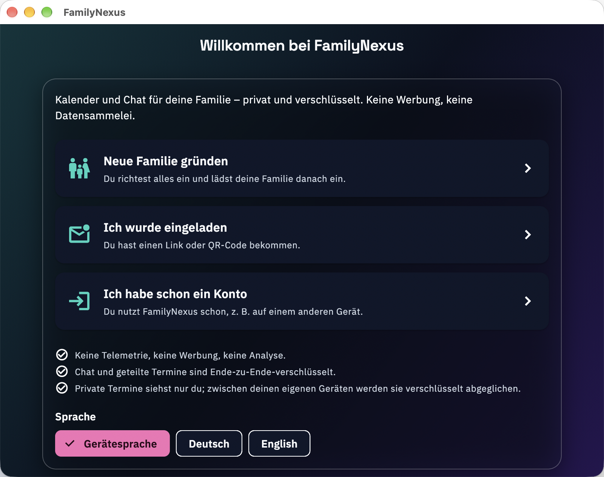
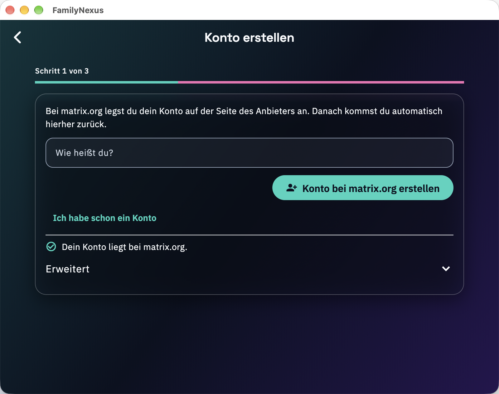
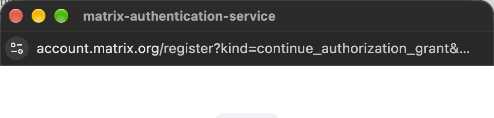
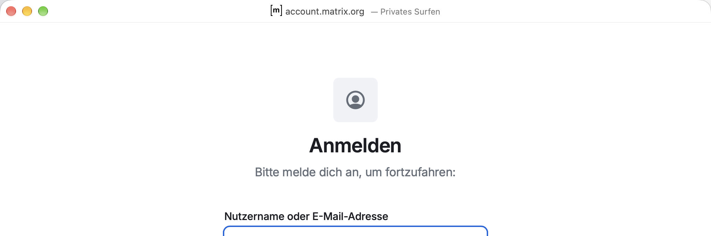
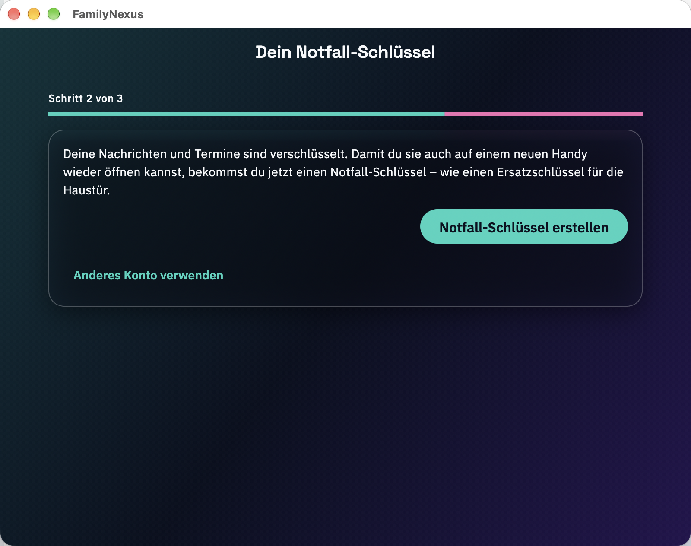
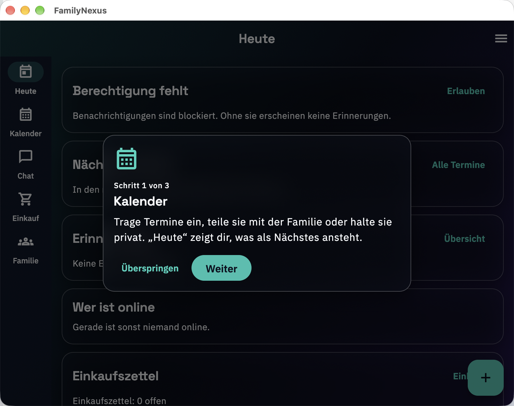
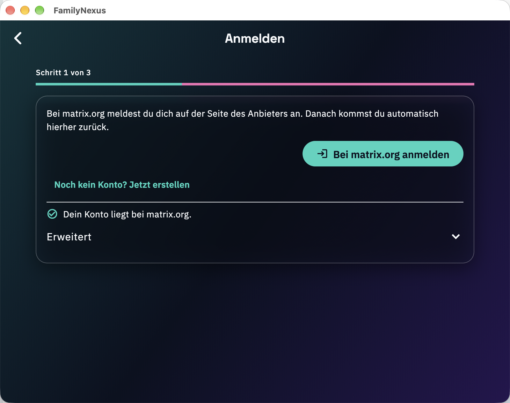
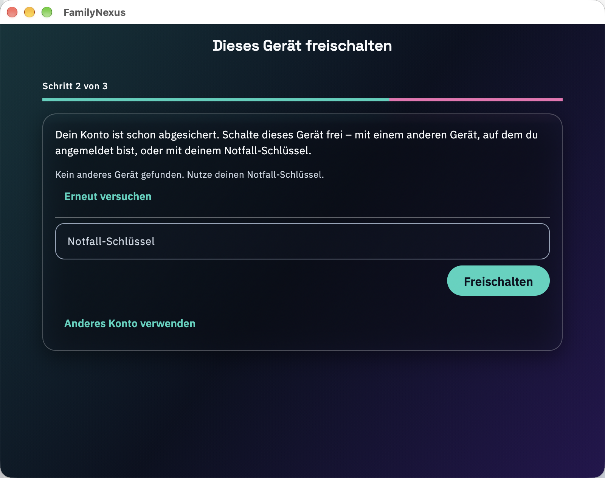

Block B des Plans v03: Konto bei matrix.org über die App anlegen, abmelden, erneut anmelden, Konto löschen. Der Lauf wurde nach B-06/B-09 auf Wunsch des Nutzers abgebrochen. Anmeldung und Rücksprung nach echter Registrierung sind belegt, die Löschung über die App und die Gegenprobe nicht.
Mit einem echten Konto bei matrix.org funktionieren Registrierung (B-03/B-04) und erneute Anmeldung (B-06): Die App öffnet die Anbieterseite, und nach der Eingabe durch den Nutzer kommt der Rücksprung in die App ohne Fehler. Danach ist in logs/B-04.txt und logs/B-06.txt kein Fenster eines Browsers mehr offen.
Mit Chrome als Standardbrowser erscheint die Anbieterseite in einem Chrome-Fenster mit Adressleiste (Titel „matrix-authentication-service“, Chrome vorn, Chrome 0 → 1 Fenster, Safari 0). In Lauf 29 mit Safari als Standard war es ein Fenster ohne Adressleiste. Das Bild bei einem Prüfer hängt also vom Standardbrowser ab. Ob dies die Sitzung der App ist, die macOS im Standardbrowser hostet, oder ein Rückfall der App auf den externen Browser, ist nicht belegt: Es gibt keine Logzeile zum Codepfad.
Die Löschung über die App (B-07, B-08) und die Gegenprobe mit dem gelöschten Konto (B-10) wurden nicht ausgeführt. Der Nutzer hat das Konto außerhalb der App auf account.matrix.org gelöscht; das ist nur seine Angabe, ich habe es nicht geprüft.
| Nr. | Schritt | Ergebnis | Beobachtung |
|---|---|---|---|
| B-01 | Ausgangslage erfassen | ✓ bestanden | Prüfkopie mit frischer Bundle-ID, kein Konto angemeldet, Browser-Fenster vor dem Test: keines sichtbar (logs/B-01.txt). Ausgangswert Standardbrowser laut Lauf 29: Safari. |
| B-02 | Standardbrowser umstellen | ✓ bestanden | Chrome ist Standard (LaunchServices-Datei 08:17:59 geändert, NSWorkspace: Chrome). Die Umstellung nahm der Nutzer in den Systemeinstellungen vor, geplant war Firefox. |
| B-03 | „Neue Familie gründen“, Name, „Konto bei matrix.org erstellen“ | ⚠ mit Befund | Seite account.matrix.org/register erscheint vor der App in einem Chrome-Fenster mit Adressleiste (Abb. 3). Firefox, Vivaldi, Safari: kein Fenster. Kein Beleg für die Art der Sitzung (siehe Abschnitt 4). |
| B-04 | Registrierung durch den Nutzer | ✓ bestanden | Nutzer registrierte mit Wegwerf-Adresse. Rücksprung in die App ohne Fehler, App zeigt „Dein Notfall-Schlüssel“, Schritt 2 von 3 (Abb. 4). Kein Browser-Fenster offen. |
| B-05 | Notfall-Schlüssel, Familie gründen, Hauptansicht | ✓ bestanden | Schlüssel wurde nicht aufgenommen. Familienname „Pruefung“ und „Später“ bediente der Tester, die Hauptansicht „Heute“ ist erreicht (Abb. 5). |
| B-06 | Abmelden und erneut anmelden (Nutzer tippt) | ✓ bestanden | Abmelden führt zur Anmeldeseite (Abb. 6), „Bei matrix.org anmelden“ öffnet wieder ein Chrome-Fenster (Abb. 7). Nach der Anmeldung zurück in der App, ohne Browser-Fenster; die App verlangt „Dieses Gerät freischalten“ mit Notfall-Schlüssel (Abb. 8). |
| B-07 | „Konto löschen“ in der App | ○ nicht durchgeführt | Ohne Notfall-Schlüssel nicht erreichbar: Der Schlüssel war nicht gespeichert, die App steht nach der Anmeldung auf „Freischalten“. Planfehler (siehe Abschnitt 4). |
| B-08 | Löschung bestätigen, „Löschung prüfen“ | ○ nicht durchgeführt | Folge von B-07. Das Konto löschte der Nutzer auf account.matrix.org; die App-Löschung bleibt ungetestet. |
| B-09 | Standardbrowser zurückstellen | ✓ bestanden | Safari ist wieder Standard (logs/B-09.txt, nach zwei Prüfungen; die Datei wurde zeitweise verzögert mit Firefox angezeigt). |
| B-10 | Gegenprobe: Anmeldung mit gelöschtem Konto | ○ nicht durchgeführt | Auf Wunsch des Nutzers abgebrochen (logs/B-10.txt). Prüfkopie beendet und gelöscht. |
Alle Aufnahmen stammen von der Prüfkopie. Passwort, Mailadresse, Benutzername und Notfall-Schlüssel sind auf keiner Aufnahme sichtbar. Aufnahmen, die sie zeigten, wurden verworfen.







account.matrix.org/login. Zugeschnitten, noch nichts eingegeben.
| Kriterium | Ergebnis | Begründung |
|---|---|---|
| Registrierung mit Rücksprung nach echter Eingabe (B-04) | ✓ erfüllt | Rücksprung ohne Fehler, kein Fenster mehr offen. |
| Erneute Anmeldung mit Rücksprung (B-06) | ✓ erfüllt | Ebenso. Danach folgt die erwartete Freischaltung. |
| Sitzung unabhängig vom Standardbrowser (B-03/B-06/B-07) | ⚠ nicht erfüllt, so nicht belegt | Die Darstellung folgt dem Standardbrowser: Safari ohne Adressleiste (Lauf 29), Chrome mit Adressleiste (Lauf 30). Schritt B-07 wurde nicht ausgeführt. |
| Löschung belegt (B-08, B-10) | ○ offen | Nicht ausgeführt. Löschung nur durch Aussage des Nutzers. |
ASWebAuthenticationSession startete oder auf den externen Browser zurückfiel. Der Schluss beruht auf Titel und Fensterzahl.de.inneso.familynexus.apple4b bleibt als leere Hülle zurück (macOS: geschützte Metadaten); der Datenordner ist entfernt.Die Antwort und die macOS-Review-Notiz sagen, das System zeige die Sitzung als Safari-gehostetes Fenster ohne Werkzeugleiste. Das gilt nach diesem Lauf nur, wenn Safari Standardbrowser ist. Mit Chrome zeigt macOS ein Fenster mit Adressleiste. Ob Apples Prüfer Safari als Standard haben, ist offen.
Vorschlag: In Antwort und Notiz „Safari-gehostet“ durch „vom System im Fenster des Standardbrowsers dargestellt (mit Safari als Standard: privates Fenster ohne Werkzeugleiste)“ ersetzen, und im Anhang beide Fälle zeigen. Die Änderung ist noch nicht umgesetzt; store/metadata/macos/review_notes.txt trägt den Safari-Satz noch.
| Prio | Vorschlag | Warum | Aufwand |
|---|---|---|---|
| 1 | Notiz und Antwort zum Standardbrowser anpassen (Abschnitt 5). | Sonst widerspricht die Notiz dem, was ein Prüfer mit anderem Standardbrowser sieht. | klein |
| 2 | Codepfad der Sitzung sichtbar machen (Logzeile oder Test-Hook). | Nur so lässt sich „Sitzung der App“ von „Rückfall auf den Browser“ unterscheiden. | mittel |
| 3 | Block B wiederholen mit gespeichertem Notfall-Schlüssel (ohne Abmelden) und App-Löschung zuerst; erst danach Gegenprobe. | Schließt B-07, B-08, B-10. | klein |
| 4 | Plan v03 anpassen: Notfall-Schlüssel vor B-06 sichern oder B-06 vor B-07 streichen. | Verhindert denselben Planfehler. | klein |
User E2E Test Report/2026-11-14_30_macOS_Apple-Guideline4_echte-Anmeldung/ (Screenshots, Logs, diese Datei) · Testplan: User E2E Test/Testplan_Apple_Guideline4_Anmeldung_macOS.md (v03, Block B) · Bezug: Issue #268, #430, E-91. Durchführung und Auswertung durch denselben Agenten (Trennung nach CLAUDE.md Abschnitt 5 nicht eingehalten, weil Block B im Gespräch mit dem Nutzer lief). Das Testkonto wurde vom Nutzer angelegt und nach dessen Angabe gelöscht; Zugangsdaten stehen weder hier noch in den Logs.